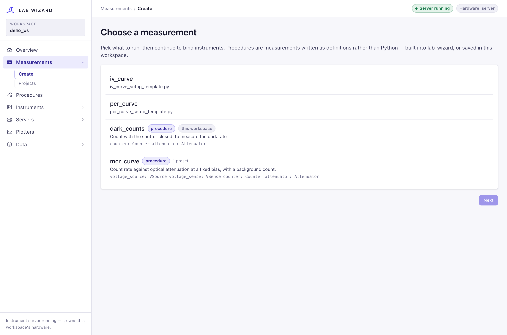
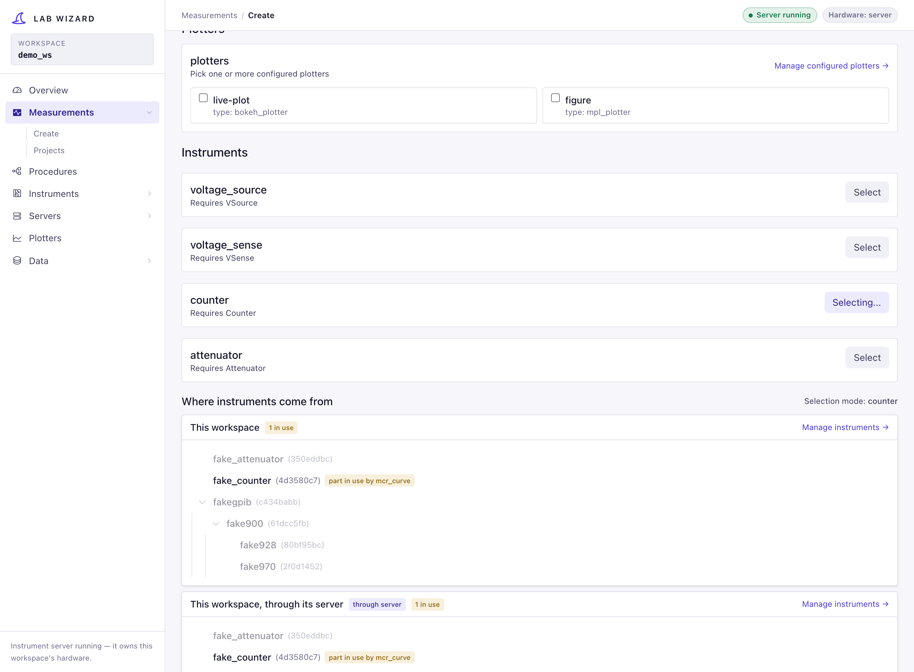
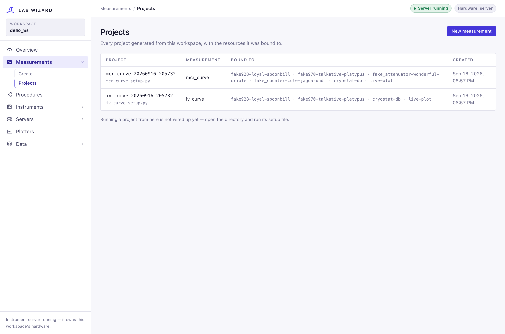

Measurements¶
The Measurements section is the core wizard workflow: pick something to run
(/measurements/new), bind each resource it needs to a configured instrument,
saver and plotter (/measurements/resources), and generate a runnable project
folder. /measurements/projects lists what has been generated.
What you pick from is both kinds of measurement side by side: hand-written
Python under lib/measurements/, and procedures — this
workspace's own and the ones built into lab_wizard. To the person binding
instruments they are the same thing: roles to fill and parameters to set.
This page explains how the matching and code generation work.

How a measurement declares what it needs¶
A measurement lives in lib/measurements/<name>/ and has two files:
<name>.py— the measurement class (the run logic), and<name>_setup_template.py— a template the wizard fills in.
The template defines a @dataclass ending in Resources whose annotations
declare the required resources. From
iv_curve_setup_template.py:
@dataclass
class IVCurveResources:
# wizard:resource_fields:start
savers: list[GenericSaver] = field(default_factory=list)
plotters: list[GenericPlotter] = field(default_factory=list)
voltage_source: VSource = field(default_factory=StandInVSource)
voltage_sense: VSense = field(default_factory=StandInVSense)
# wizard:resource_fields:end
params: IVCurveParams = field(default_factory=IVCurveParams)
get_measurements.py
reads these annotations and classifies each field:
- a field typed as a subclass of
GenericSaver→ a saver requirement, - a subclass of
GenericPlotter→ a plotter requirement, - anything else (a behavior ABC like
VSource) → an instrument requirement.
list[T] annotations are recognized (e.g. savers: list[GenericSaver]), and
params is skipped.
Matching resources to requirements¶

GET /api/get-resources/{name} returns, for each requirement, the candidates the
user can pick from:
graph LR
REQ["Requirement<br/>e.g. voltage_source: VSource"] --> LOCAL["Local matches<br/>discover_matching_instruments"]
REQ --> REMOTE["Remote matches<br/>list_remote_attributes"]
REQ2["Requirement<br/>saver / plotter"] --> REG["Configured registry<br/>get_configured_resources_tree"]- Instruments are matched by class hierarchy:
discover_matching_instrumentsimports every class underlib/instrumentsand keeps the ones that are a subclass of the required behavior ABC. So aVSourcerequirement offersSim928,Dac4DChannel, etc. — and crucially, it offers the configured instances of those from your tree. - Remote instruments matching the requirement's behavior ABC are pulled from
registered remote servers and offered alongside
local ones (matched by
behavior_abcname). - Savers/plotters are offered from their flat config registries — you pick a configured instance by name.
This is the answer to "how are instruments chosen for measurements based on generic instruments?": the measurement asks for a behavior (the generic ABC), and the wizard offers every configured instrument that is-a that behavior.
Generating the project¶
POST /api/create-measurement-project (→
generate_measurement_project)
does three things:
- Writes a project YAML containing only the subset of config you selected
— the chosen instrument lineages (leaf back to root), savers, and plotters —
plus a
deviceblock and measurement defaults. This is a self-contained snapshot, so the project keeps working even if the central config changes. - Fills in the setup template by replacing the
# wizard:<block>:start/endregions: imports— concrete instrument/saver/plotter imports,resource_fields— the dataclass field declarations,instantiation— the construction lines,return_fields— wiring the constructed objects into theResources.- Copies the measurement source (
<name>.py) into the project. The generated setup imports this sibling module, so edits made inside the project are the code that runs.
The project folder is timestamped, e.g. projects/iv_curve_20260528_143012/,
containing <folder>.yaml, <name>_setup.py, and <name>.py.
What a project contains¶
A project names its instruments and copies none of their settings. Its YAML
records each instrument's attribute_name and where it lives:
resources:
instrument_sources:
sim928-brave-otter: local # this workspace's config/instruments
counter-quiet-lynx: cryo-rack # a server in config/remote/servers.yaml
and the setup file resolves each one when the project runs:
So a rack readdressed, or a bench setting changed, in Manage Instruments reaches
every project that uses it without regenerating. The measurement's own params
(measurement.params) stay frozen in the project. A project must run from inside
its workspace, and says so if it is not. Removing an instrument in Manage
Instruments lists the projects that use it first.
Each instrument can come from this workspace directly, or through this workspace's server — the same instruments, used through the process that owns them instead of opened by the project. When a local selection conflicts with a rack the server holds, the warning offers that switch.
Generation styles¶
| Style | What it writes | When to use |
|---|---|---|
production (default) |
instruments by name, as above | always, unless you need the escape hatch |
pedagogical_embedded |
every instrument's params written into the Python, plus a full copy in the project YAML | running a project outside any workspace, or reading how instruments are built. Breaks when an instrument is readdressed; cannot use an instrument through a server |
The former YAML-expanded teaching style is retired. Projects generated before this change carry their own instrument copy and keep running exactly as they did.
Custom resources (Instruments → Custom resources) follow the same two styles, for the same reasons: a production file names its instruments and resolves them against the tree that owns them, and the embedded one carries its own copy.
Instruments a run is holding¶
An instrument a running measurement has claimed is marked in use in the picker, with who holds it; a claim on part of an instrument — one input of a counter — reads part in use. Binding one is still allowed, because the run may well be over before this project is run; what cannot happen is the two holding it at once. See run claims.
Procedures and presets¶
Measurements under lib/measurements and procedures
are offered side by side, and either can start from a named params preset
from config/measurements/<name>/, copied into the project when it is generated.
Running the generated project¶
cd projects/iv_curve_20260528_143012
uv run iv_curve_setup.py # local: loads the project YAML
uv run iv_curve_setup.py --remote tcp://lab-server:12300 # remote
The template's __main__ block picks local resources, a per-attribute
CompositeResources, or the all-remote override, then hands the run to
RunLifecycle. The same
procedure works in each mode because measurements consume behavior ABCs, which
both local instruments and remote proxies satisfy.
Observations flow through the procedure data bus to the configured saver and
plotter adapters.
Every run goes through the same steps, in this order:
- Claim. Every exclusive transport this process will open is leased for the length of the run, and every instrument server on the machine is asked whether it already holds one. Either refusal stops the run with the holder's name, before any instrument is opened.
- Resolve, then claim what is routed. The instruments are constructed — only now, because opening a serial-backed rack before claiming it is the race claims exist to close. Instruments that live on a server are then claimed there, so two runs cannot drive the same remote instrument at once. Those claims are renewed for the length of the run and released at the end; see run claims.
- Baseline.
apply_baseline()writes each bound instrument's configured bench settings (coupling, impedance, wavelength, …), so a setting an earlier experiment changed cannot carry into this one. - Run the measurement.
- Safe state, if the run failed. On a failure, an abort, an exception or
Ctrl-C, each instrument that declares a safe state is put in it — a source to
0 V and off, an attenuator shutter-closed at maximum attenuation. A run that
completes is left where its own procedure ended it, so a choice like the IV
curve's
turn_off_at_end: falseis honoured. - Release the claims, always.
The script exits non-zero when the run does not succeed.
The projects list¶
/measurements/projects lists every project this workspace has generated,
newest first: what it measures, what it is bound to, and when it was made.

The wizard does not run them — there is no launch button yet (see the Roadmap). A project is a folder you run from a terminal, which is also what makes it inspectable and editable.